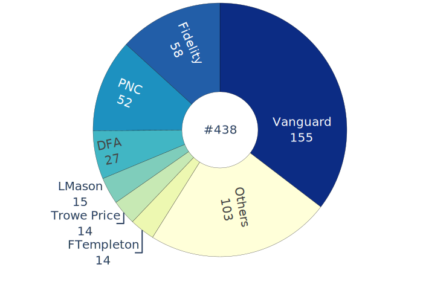
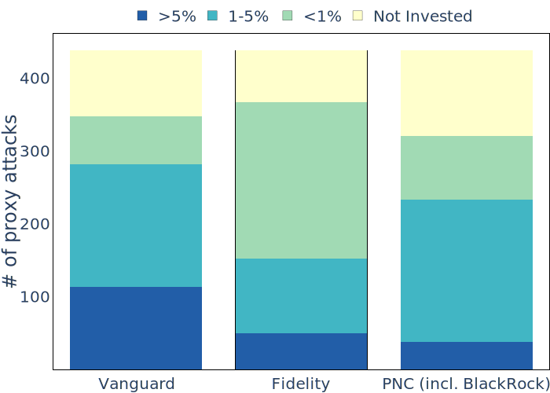
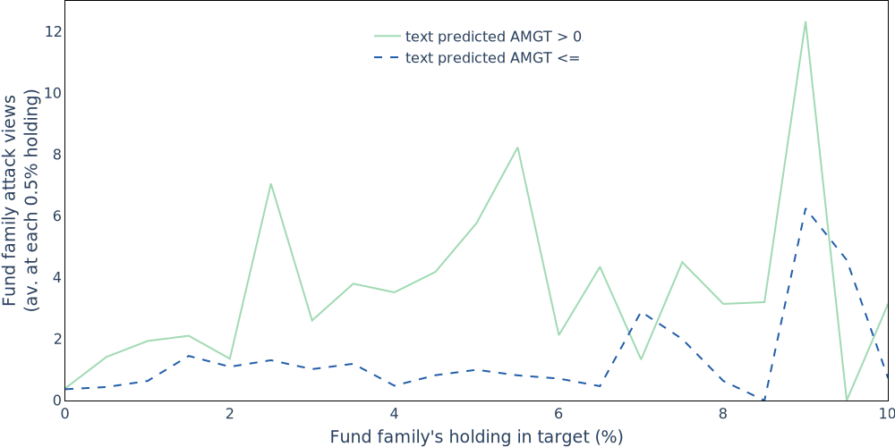
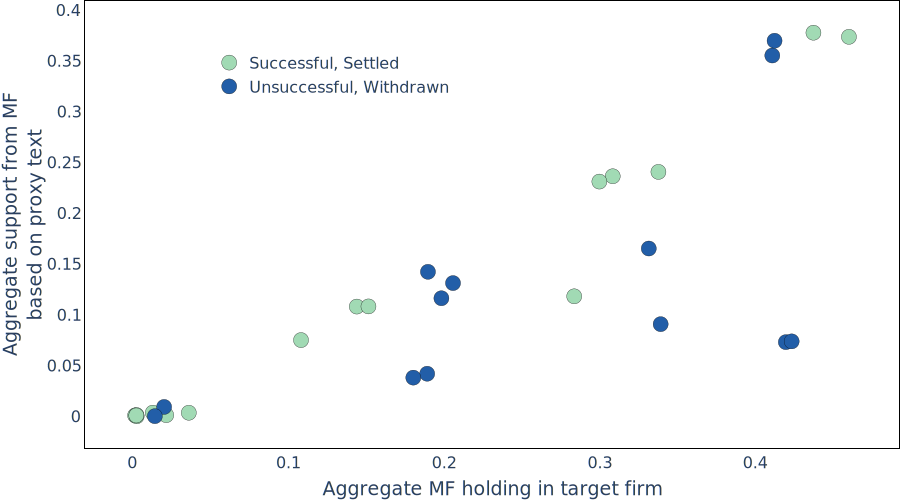
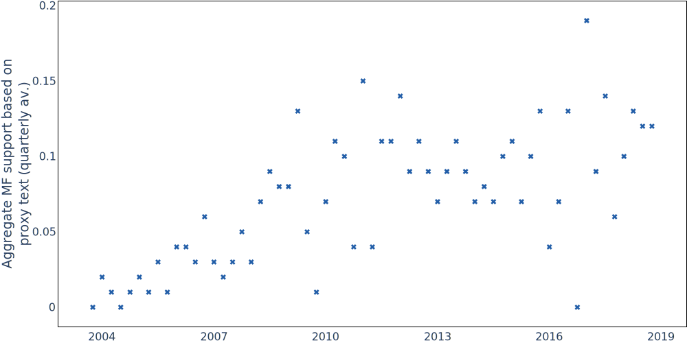

Catching the conscience of kings
Evidence and impact of activists persuading investors
Download PDF 
Mutual fund institutions (fund families) are often casually apathetic to shareholder activism, and are known to avoid a public confrontation, speak out against hedge fund activists (activists), and relinquish voting power ahead of confrontational proxy fights (attacks). This makes it an uphill battle for the activist, who need their support at affect any change. A strategy they use to accomplish is fighting on issues which are important to the major shareholders. The strategy is becoming more important as the shareholder base becomes more concentrated.
When activists pander to the major shareholders they catch their attention, get favourable voting and are more likely to win the proxy contest. Activist improve at implementing this strategy as they mature.
Do fund family hold significant voting power?
They do!! not much of a surprise here. Mutual funds hold 16.8% of activism target’s stock on an average. Also the major shareholders change across attacks, so its important for activists to change their strategy based on who holds the power. Figure below shows the list of biggest fund families, and family level variation for Vanguard, BlackRock and Fidelity.
 How do we measure fund family preference?
It does seem abstract to know what a fund family wants. However, there are definitely ways it is revealed, such as behind the scenes engagements, voting in sharehder proposals, proxy guidelines notes. I focus on fund family voting in shareholder proposals to measure preferences.
I use Support Vector Regresion (SVR) to accomplish this. SVR assigns weights to phrases based on how fund family voted in the proposals, I use these weights to predict their voting in the proxy attack, based on how these phrase were used in the proxy text. These weights are in line with fund families' proxy guidelines documents.
Do activists write their text to appeal to families which holds voting power?
Yes, the figure below show an increasing trend for predicted against management with respect to holdings. The results hold if we fix attack level and fund familylevel fixed effects. So for an attack, the activist write their text in a way to get support from fund families which own more shares. Even for a fund family, the proxy text is more aligned to their preferences when they have more voting power.

But ... does it help?
It does, attacks which speak to the preferences of fund families are able to catch their attention. I measure attention in terms of how many times ap IP address associated by a fund family accessed attack filings on the SEC.gov server.
Apart from the increased attention, attacks which employ this strategy get more favorable votes and are more likely to win. Figure below shows that for similar level of mutual fund holdings, attacks which catered more to major fund families, were more likely to win. In fact, we see this strategy being used more as activists mature.
 The finding suggest that the shareholder base’s implicit preferences play a crucial role in activist proxy solicitation. Moreover, the activists provide a channel via which fund preferences affect corporate governance.